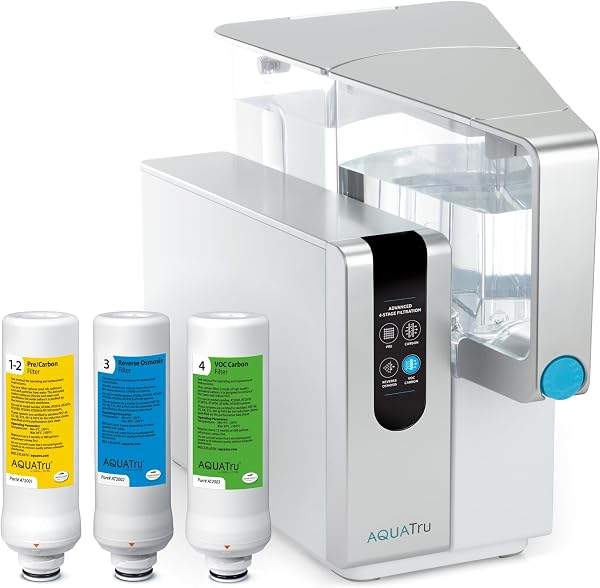
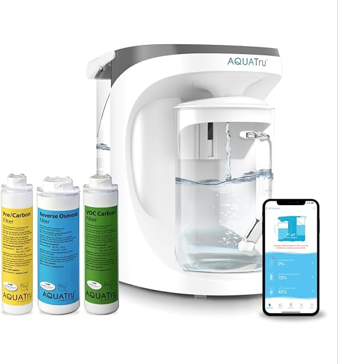
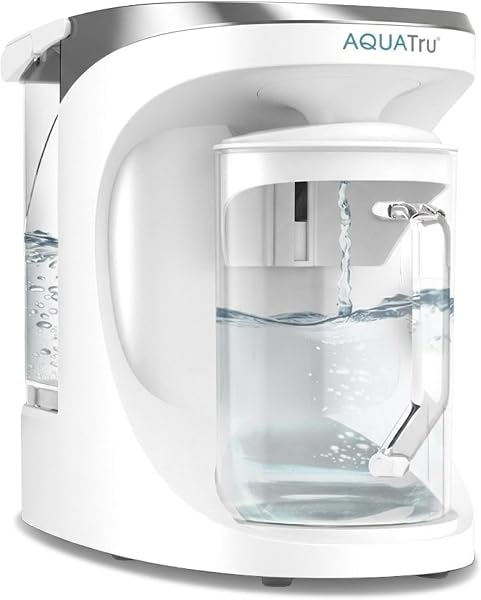
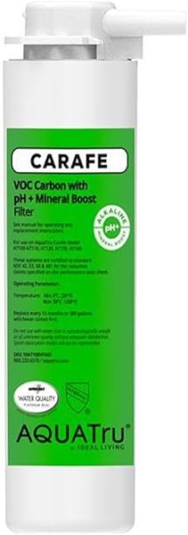

AquaTru Reverse Osmosis Review 2026: Classic, Carafe, Connect Compared
PureFlow Lab is reader-supported. We may earn a commission when you buy through links in this guide — at no extra cost to you. As an Amazon Associate, we earn from qualifying purchases. See our Disclosure for details.
Top Picks (At a Glance)

AquaTru Classic — Countertop RO
The flagship model. 4-stage RO removes 84 listed contaminants. No plumbing required, sits on your countertop. NSF certified. ~$475.
Check Price on Amazon →
AquaTru Connect — Smart WiFi RO
WiFi-connected version of the Glass Carafe. App tracks filter life and water quality remotely. ~$425.
Check Price on Amazon →
AquaTru Glass Carafe — Countertop RO
Glass pitcher dispensing instead of plastic. Same 4-stage RO, smaller footprint than Classic. ~$375.
Check Price on Amazon →
AquaTru VOC + pH Mineral Boost Filter
Replacement filter for the Carafe with alkaline remineralization. ~$55. Counts toward AquaTru’s 6-12 month replacement cycle.
Check Price on Amazon →TL;DR: AquaTru makes the best countertop reverse osmosis systems on the market. The trade-off is you’re paying premium countertop pricing — $375-$475 for what is functionally a filtration system you place on your counter. For renters, apartment dwellers, RV owners, or anyone who can’t or won’t plumb an under-sink RO, AquaTru is the right call. The AquaTru Classic ($475) is the most-recommended version with the largest treated-water capacity. The Glass Carafe ($375) is the newer compact version with glass dispensing instead of plastic. The Connect ($425) adds WiFi tracking of filter life and water quality. Important honest take: if you can plumb under-sink RO, do that instead. The Waterdrop G3P600 at $439 gives you significantly more treated-water capacity, better wastewater ratio, and lower cost per gallon over five years.
If you’ve been researching countertop reverse osmosis, you’ve almost certainly encountered AquaTru. They’re the dominant brand in the countertop RO category — well-marketed, NSF-certified, and consistently the top recommendation when “no plumbing required” is part of the criteria.
This review covers their three current under-sink-free RO models with honest assessments of where AquaTru wins, where it doesn’t, and which model fits which situation.
About AquaTru
AquaTru launched in 2017 as a direct-to-consumer countertop water purification brand and has grown into the leader of the countertop RO category. Their pitch is straightforward: get RO drinking water without plumbing, without an under-sink install, without renting modifications.
The brand’s positioning:
- Countertop-first. AquaTru doesn’t make under-sink systems. Every product in the lineup sits on your counter.
- Premium NSF certifications. AquaTru carries NSF/ANSI 42, 53, 58, 401, and P473 certifications across most of the lineup. That’s a broader certification stack than most countertop competitors.
- 4-stage filtration. Every AquaTru uses the same fundamental 4-stage architecture (pre-filter, two carbon stages, RO membrane). The differences between models are physical form factor and smart features.
- 84 contaminants removed. AquaTru consistently advertises “84 contaminants” — this is a marketing number based on the contaminants their NSF certifications cover. Includes PFAS, lead, fluoride, chromium-6, microplastics, and most pharmaceutical residues.
- Subscription filter program. AquaTru’s recurring filter business is a meaningful part of their model. They make replacement filter purchases easy via subscription, which is good for them and good for buyers who don’t want to remember.
What AquaTru doesn’t do: under-sink systems, whole-house RO, tankless designs, or low-cost entry-level products. If you want any of those, look at Waterdrop, iSpring, APEC, or Express Water.
The AquaTru Lineup Explained
Unlike Waterdrop’s confusing naming, AquaTru’s lineup is straightforward:
- AquaTru Classic — the original countertop. Largest dispense reservoir (about 1 gallon), plastic pitcher dispensing, manual controls.
- AquaTru Glass Carafe — the newer model with a glass pitcher instead of plastic. Smaller overall footprint than Classic. Same 4-stage RO architecture.
- AquaTru Connect — the Glass Carafe with WiFi connectivity added. App on your phone tracks filter life, dispensing volume, and water quality data over time.
That’s the entire current under-sink-free lineup. AquaTru does NOT make: - Under-sink RO systems - Whole-house RO - Hot water dispensing models (Waterdrop M6H has this) - Smart faucet integrations
The choice between Classic, Carafe, and Connect comes down to three things: do you want plastic or glass dispensing, do you want WiFi/smart features, and do you have the counter space for the larger Classic.
Top Picks Detailed
Best Overall: AquaTru Classic
The AquaTru Classic is the original countertop RO that established the category and remains the most-recommended pick. Sits on your countertop (about the footprint of a coffee maker), plugs into a regular outlet, fills from your sink. 4-stage RO removes 84 listed contaminants.
The Classic has the largest dispense reservoir in the lineup — roughly 1 gallon of treated water held in a plastic pitcher inside the unit. For most households this is enough capacity to handle a day’s drinking and cooking water without needing to refill the unit multiple times. Build quality is excellent and the unit has held up well in long-term owner reviews (5+ year ownership reports are positive on durability).
NSF/ANSI 58 and 372 certified. The unit is BPA-free throughout. Filter replacement is straightforward (twist-out, twist-in) and AquaTru’s subscription program reminds you when it’s time.
Pros: Established model with long ownership track record, largest treated-water capacity in the lineup, 4-stage RO with NSF certifications, easy filter replacement, no plumbing required. Cons: Plastic pitcher rather than glass (cosmetic preference, not functional issue), unit takes meaningful counter space (about a coffee maker’s footprint), per-gallon cost of operation is higher than under-sink RO over the long run.
Price at last check: $475.00. Check Price on Amazon →
Best Smart: AquaTru Connect
The AquaTru Connect is the Glass Carafe with WiFi connectivity added. Connects to your home WiFi, syncs with an iPhone/Android app that tracks filter life, dispensing volume, and water quality data over time.
Whether this is worth the upgrade depends on you. The genuinely useful features: - Filter life tracking that pings you when replacement is due (vs the on-unit indicator on the Classic) - Daily/weekly water consumption logging - TDS tracking over time so you can see if your incoming water quality changes
The features that are less useful in practice: - “Smart” filter ordering — adds friction vs just buying filters when needed - Remote dispensing notifications
If you’d genuinely use the data tracking, the Connect is worth the $50 premium over the standard Glass Carafe. If the features sound nice but you wouldn’t actually open the app, save the money and get the Carafe.
Pros: Same 4-stage RO architecture as the other AquaTru models, WiFi connectivity for filter and quality tracking, glass pitcher dispensing. Cons: Smaller capacity than the Classic, smart features may go unused for most buyers, requires WiFi setup during initial install.
Price at last check: $425.00. Check Price on Amazon →
Best Compact: AquaTru Glass Carafe
The AquaTru Glass Carafe is the newer, more compact AquaTru model. Same 4-stage RO architecture, smaller overall footprint than the Classic, glass pitcher for dispensing instead of plastic.
The Carafe trades capacity for footprint. The glass pitcher holds less treated water than the Classic’s plastic pitcher (about 60-70% of the capacity), so households with high water use may end up refilling more frequently. For 1-2 person households or anyone who values countertop aesthetics, the glass pitcher is a meaningful upgrade — both for visual appeal and the perception of “cleaner” water in glass.
NSF certifications match the Classic. Filter replacement is the same. Build quality reports are equivalent.
Pros: Smaller footprint than Classic, glass pitcher (aesthetic and “clean” feel), same 4-stage RO and NSF certifications, lower price than Classic. Cons: Smaller capacity than Classic (more frequent refilling for larger households), glass requires more careful handling than plastic, no smart features (look at Connect for those).
Price at last check: $375.00. Check Price on Amazon →
Filter Replacement: The Real Long-Term Cost
The sticker price isn’t the full cost. AquaTru’s filter replacement schedule and pricing meaningfully affects 5-year ownership cost.
The AquaTru filter cycle:
- Pre-filter (sediment + carbon): Every 6 months — ~$35
- RO membrane: Every 2 years — ~$80
- Post-treatment carbon: Every 12 months — ~$35
Annual filter cost: $90-$120 5-year filter cost: ~$500
The AquaTru VOC Replacement Filter with pH+ Mineral Boost at $55 is the alkaline-remineralization upgrade — adds minerals back after the RO process so the water tastes less “flat.” If you opt for this filter type, add another $20-$30/year to ongoing cost.
Subscription discount: AquaTru offers ~15% off filters if you sign up for the auto-delivery subscription. Over 5 years that saves $75-$100. Worth it if you’re going to keep the unit anyway.
Comparison to under-sink RO: A Waterdrop G3P600 costs $90-$180/year in filters (similar order of magnitude to AquaTru) but produces 600 GPD of water vs the AquaTru’s effective 50-80 GPD. Per gallon of treated water, AquaTru is roughly 2-3x more expensive than under-sink RO over five years.
What Sets AquaTru Apart
1. Best-in-class countertop NSF certifications. AquaTru carries NSF/ANSI 42, 53, 58, 401, and P473 certifications across most products. Many countertop competitors carry only one or two of these. P473 (PFAS reduction) is especially important and increasingly rare elsewhere.
2. Established subscription / refill infrastructure. AquaTru’s filter subscription program is the smoothest in the category. Filters arrive when you need them, you don’t have to think about it.
3. Brand trust and long-term track record. AquaTru has been in the countertop category since 2017 with consistent reliability reports. Buyers know what they’re getting. This matters more than people realize for a $400 purchase.
4. The “84 contaminants” marketing is actually defensible. Many countertop brands make sweeping claims that aren’t backed by certifications. AquaTru’s list of contaminants is documented in their NSF certifications, which is real.
What AquaTru Could Do Better
1. No under-sink option. If you want the same brand for both your kitchen and a friend’s apartment, you’re out of luck. AquaTru doesn’t make any plumbed-in product.
2. Premium pricing for countertop format. At $375-$475, the AquaTru models are more expensive than under-sink alternatives that produce far more treated water. The “no plumbing required” convenience is real but you pay for it.
3. Filter costs add up. AquaTru filters are more expensive than equivalent generic replacements. Over 5 years, filter costs approach the original purchase price of the unit.
4. Slow refill rate. The countertop architecture means the unit produces water slower than under-sink systems. If multiple family members are filling water bottles in the morning, you can hit empty.
5. No instant-hot option. Waterdrop M6H Instant Hot offers RO water plus instant hot water dispensing for a similar price. AquaTru only offers room-temperature water.
AquaTru vs Competitors
vs Waterdrop M6H Instant Hot ($359): The Waterdrop M6H is the strongest countertop competitor. Lower price, includes instant hot water dispensing at 5 temperatures, similar NSF certifications. The trade-off: AquaTru has a longer brand track record and the 84-contaminant certification narrative is well-established. If you want hot water and a lower price, Waterdrop wins. If you want the most-established countertop brand with maximum NSF certifications, AquaTru wins.
vs Waterdrop G3P600 ($439, under-sink): This is the most important comparison. The Waterdrop G3P600 costs roughly the same as the AquaTru Glass Carafe but is an under-sink system producing 600 GPD of treated water vs the AquaTru’s ~50-80 GPD effective rate. If you can plumb under-sink, the G3P600 is a much better deal per gallon. AquaTru only makes sense when under-sink isn’t an option.
vs Brondell Coral UC300 ($150): The Brondell Coral is a different product entirely — under-sink filtration without RO. Cheaper, but it doesn’t remove what RO does (no fluoride removal, no microplastic removal, no significant TDS reduction). If you specifically need RO water, AquaTru is the right call; if filtered water (chlorine, lead, some contaminants) is enough, the Brondell is much cheaper.
vs Berkey-style gravity filters: Berkey gravity filters are cheaper ($300-$400) but use gravity-fed activated carbon, not RO. Different technology, different contaminant removal profile. Berkey is better for off-grid use; AquaTru is better when you have electricity and want true RO purification.
Comparison Table
| Model | Dispensing | Capacity | Smart | Certifications | Price |
|---|---|---|---|---|---|
| AquaTru Classic | Plastic pitcher | ~1 gallon | No | 42/53/58/401/P473 | $475 |
| AquaTru Glass Carafe | Glass pitcher | ~0.7 gallon | No | 42/53/58/401/P473 | $375 |
| AquaTru Connect | Glass pitcher | ~0.7 gallon | WiFi tracking | 42/53/58/401/P473 | $425 |
Buyer Scenario Decision Matrix
Match your situation:
| Your Situation | Right AquaTru Pick | Why |
|---|---|---|
| First AquaTru, want maximum capacity | AquaTru Classic | Largest treated-water reservoir, longest track record |
| Want glass dispensing aesthetics, smaller footprint | Glass Carafe | Cleaner look, less counter space, same RO performance |
| Want WiFi tracking of filter life and water quality | AquaTru Connect | Only AquaTru with smart features |
| You rent or live in an apartment | Any AquaTru model | All AquaTru products require zero plumbing |
| You want RO water with instant hot dispensing | Look at Waterdrop M6H — AquaTru doesn’t offer hot | M6H gives you both at competitive price |
| You can plumb under-sink and want best value | Waterdrop G3P600 at $439 | Much higher capacity for same price, lower 5-year cost |
| Tight budget, want filtered water (not full RO) | Brondell Coral UC300 at $150 | Different tech but much cheaper |
| You want RO water everywhere in the house | Wrong category — see our whole house RO guide | AquaTru is point-of-use only |
FAQ
Is AquaTru worth the price?
For renters, apartment dwellers, RV owners, or anyone who can’t install under-sink plumbing — yes. AquaTru is the most-established countertop RO brand with the best NSF certifications in the category. For homeowners who can plumb under-sink, no — the Waterdrop G3P600 costs the same and produces 5-10x more treated water per day.
What’s the difference between AquaTru Classic and Carafe?
The Classic has a larger plastic pitcher reservoir (~1 gallon) and is the original AquaTru model. The Carafe has a smaller glass pitcher (~0.7 gallon) and is more compact. Both use the same 4-stage RO architecture and have identical NSF certifications. The Classic holds more water at once; the Carafe looks better on your counter.
Does AquaTru really remove 84 contaminants?
The 84 number is based on the contaminants covered by AquaTru’s NSF/ANSI 42, 53, 58, 401, and P473 certifications. The certifications are real and verifiable through NSF’s database. The contaminants include PFAS/PFOA/PFOS, lead, fluoride, chromium-6, microplastics, chlorine, and various pharmaceutical residues. The 84 number is accurate marketing — not inflated.
How often do you have to replace AquaTru filters?
Pre-filter every 6 months ($35), RO membrane every 2 years ($80), post-treatment carbon every 12 months ($35). Total annual filter cost runs $90-$120. Over 5 years, expect ~$500 in filter replacements. AquaTru’s subscription program offers ~15% off filters if you set up auto-delivery.
Can AquaTru filter well water?
Yes, with caveats. RO membranes foul fast on untreated well water with iron, manganese, or hydrogen sulfide. If you’re on well water, pre-treat for those contaminants first (or test your water to verify they’re not present) before relying on AquaTru. The unit will still work but filter life will be dramatically shorter.
Is AquaTru worth it vs a Brita pitcher?
Different products. Brita removes chlorine and improves taste but doesn’t remove fluoride, lead, PFAS, microplastics, or significantly reduce TDS. AquaTru does all of those. If you want filtered drinking water and your tap water is generally safe, Brita is fine. If you want true purification removing the long list of contaminants, AquaTru is in a different category entirely.
How big is AquaTru on the counter?
The Classic is about the footprint of a coffee maker — roughly 14 inches wide, 12 inches deep, 18 inches tall. The Carafe is slightly smaller. Both need to be plugged into a regular outlet and have clearance for the pitcher to slide in and out.
Does AquaTru have an under-sink RO?
No. AquaTru’s entire lineup is countertop. For under-sink RO, look at Waterdrop, APEC, iSpring, or Express Water. See our best reverse osmosis systems guide for the under-sink comparison.
Bottom Line: Which AquaTru Should You Buy?
For most countertop RO buyers, the AquaTru Classic at $475 is the right pick. Largest capacity, longest track record, established subscription program for filter replacements.
If you want glass dispensing or smaller footprint, the AquaTru Glass Carafe at $375 is the better fit. Lower price, more aesthetic, slightly less capacity.
If you’d genuinely use WiFi filter tracking, the AquaTru Connect at $425 adds smart features to the Glass Carafe.
Honest reminder before you buy: if you can install under-sink RO at your kitchen, the Waterdrop G3P600 at the same price point ($439) gives you 5-10x more daily treated water capacity and a lower 5-year cost of ownership. AquaTru is the right call when “no plumbing” is a hard requirement. Otherwise under-sink wins on math.
Ready to buy?
Check current pricing on the AquaTru model that fits your situation:
Found this useful? Share it with someone shopping countertop water filtration.
Keep Reading
- Best Reverse Osmosis Systems for Home — AquaTru compared against under-sink alternatives
- Waterdrop Reverse Osmosis Review — the strongest under-sink competitor
- Whole House RO vs Under-Sink RO — decision framework
- Best Whole House Reverse Osmosis Systems — when countertop isn’t enough
- Best Countertop Reverse Osmosis Systems — AquaTru vs the full countertop field
- Express Water Reverse Osmosis Review — the budget under-sink alternative
- APEC vs iSpring vs Waterdrop Showdown — the top three under-sink systems compared